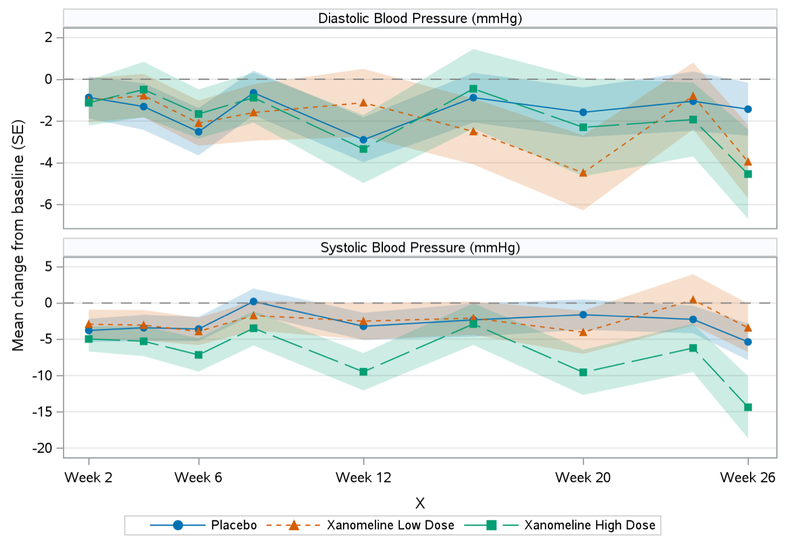

%lineplot¶
Draws lines through given values, one line per group, as PNG and RTF files and returns the numbers drawn.
Procedure: PROC SGPANEL · Family: Figures
Syntax¶
%lineplot(
data =
, plot =
, par =
, columns =
, where =
, x =
, y =
, by =
, panel =
, lower =
, upper =
, band = no
, xformat =
, xlabel =
, ylabel =
, ref =
, file =
, width = 6.5in
, height = 4.5in
, out =
, outpar =
, debug = no
)
Parameters¶
data=- The input data set: one row per group and x. (required)
plot=- Draw again: the
out=of an earlier %lineplot call, changed or not. It is drawn as it is, and no statistic is computed. Give it instead ofdata=. (optional) par=- The drawing parameters of an earlier %lineplot call: its
outpar=. A drawing parameter given in the call wins over its row ofpar=. (optional) columns=- The data set of %columns: it gives the order of the groups and their colours. When not given, the groups come in the order of the data. (optional)
where=- The rows to use: a condition in parentheses, such as
where = (paramcd = 'SYSBP'). (optional) x=- The x: one numeric variable (
x = avisitn). (required) y=- The value: one numeric variable (
y = estimate). (required) by=- The groups: one variable, one line per group. (required)
panel=- A variable: one panel per value, one under the other, each with its own y axis (
panel = paramcd). (optional) lower=- The lower end of the interval: one numeric variable. Give
upper=with it. (optional) upper=- The upper end of the interval: one numeric variable. Give
lower=with it. (optional) band=- yes: draw the interval as a band; no: as error bars. (optional, default
no) Accepts:yes,no. xformat=- The format of the ticks of x, as in a FORMAT statement (
xformat = visfmt.). When not given, the format of x. (optional) xlabel=- The label of the x axis: a text in quotes. When not given, the label of
x=(or its name). (optional) ylabel=- The label of the y axis: a text in quotes. When not given, the label of
y=(or its name). (optional) ref=- Reference lines on the y axis: one value or several, separated by blanks (
ref = 0 50). (optional) file=- The output file without its extension: the macro writes <file>.png (300 dpi) and <file>.rtf. (required)
width=- The width of the figure: a length with its unit (
width = 9in). (optional, default6.5in) height=- The height of the figure: a length with its unit (
height = 6in). (optional, default4.5in) out=- The name of the data set of the numbers drawn. When not given, they are not kept. (optional)
outpar=- The name of the data set of the drawing parameters, one row each. Give it to
par=of a later call to draw the figure again. (optional) debug=- yes: keep the work data sets lineplot. (optional, default
no)* Accepts:yes,no.
Result¶
The data set of out=: one row per panel, group and x: the variables of panel= and by=, KIND (line), X, Y, LOWER and UPPER. The data set of outpar=: one row per drawing parameter, in the order of the table: PARAMETER ($32), its name, and VALUE ($500), its value as drawn (a label in quotes). The files: <file>.png and <file>.rtf.
Details¶
It computes nothing: use it for values computed before (the LS means of %lsmeans or %mmrm by visit, a rate by month), and %meanplot to compute the mean of the records. The interval of lower= and upper= is drawn as error bars, with the groups a little apart on the x axis, or as a band. A row with a missing x, group or panel is not used. To draw the figure again without computing, give plot= the out= and par= the outpar= of an earlier call.
Good to know
Draw again: plot= takes the out= of an earlier %lineplot call, changed or not, and draws it as it is, with no statistic computed (an interval where LOWER has a value). par= takes the outpar= of that call and gives the drawing parameters: columns, by, panel, band, xformat, xlabel, ylabel, ref, file, width, height. These change the picture, not the numbers. The other parameters choose the values; with plot= the log has a NOTE for each one given, as it is not used. A drawing parameter given in the call wins over its row of par=, and the row wins over the default of the table.
Examples¶
The examples run on the example data after examples/setup.sas. The output under each call is the output of that run. They also read f_bp_mean (made by the example of %meanplot), t14_2_1_cols (made by the example of %columns). All examples of the reference run as one program: examples/reference.sas.
Before these examples: the calls that make their inputs
Run examples/setup.sas, then these calls from the examples of %describe, %anova, %freq, %chisq, %stack, %columns, %meanplot, in this order. Then the examples of this page run as shown.
/* from the example of %describe */
* Summarizes age in each group and in the Total: n, mean, SD, median, minimum and maximum.;
%describe(
data = adsl
, var = age
, by = trt01a
, total = yes
, label = "Age (years)"
, out = age_describe
)
/* from the example of %anova */
* Tests age across the three groups: one row, the p value of the F test.;
%anova(
data = adsl
, var = age
, by = trt01a
, label = "Age (years)"
, out = age_anova
)
/* from the example of %freq */
* Counts each sex in each group and in the Total: n and the percent of the subjects of the group.;
%freq(
data = adsl
, var = sex
, by = trt01a
, total = yes
, label = "Sex"
, out = sex_freq
)
/* from the example of %chisq */
* Tests sex across the groups: one row, the p value of the chi square test.;
%chisq(
data = adsl
, var = sex
, by = trt01a
, label = "Sex"
, out = sex_chisq
)
/* from the example of %stack */
* Stacks four results in the order of the table: RESULT and ORD tell where each row came from.;
%stack(age_describe age_anova sex_freq sex_chisq, out=t14_2_1)
/* from the example of %columns */
* Makes the four columns with their N from adsl, the Total last, in the order of TRT01AN.;
%columns(
data = t14_2_1
, n = adsl
, var = trt01a
, order = trt01an
, total = yes
, out = t14_2_1_cols
)
/* from the example of %meanplot */
* Draws the mean change and its SE at each visit, a panel per parameter, with the n of each point.;
%meanplot(
data = advs
, columns = t14_2_1_cols
, where = (paramcd IN ('SYSBP' 'DIABP') AND anl01fl = 'Y' AND avisitn < 99)
, y = chg
, x = avisitn
, by = trt01a
, panel = param
, ntable = yes
, xformat = VISIT.
, ref = 0
, file = &spl_out./figures/f_bp_mean
, out = f_bp_mean
)
Draws the means that meanplot kept as lines, with a band between the limits.
%lineplot(
data = f_bp_mean
, columns = t14_2_1_cols
, x = x
, y = y
, by = trt01a
, panel = param
, lower = lower
, upper = upper
, band = yes
, xformat = VISIT.
, ylabel = "Mean change from baseline (SE)"
, ref = 0
, file = &spl_out./figures/f_bp_line
, out = f_bp_line
)

Messages¶
A wrong call writes the message and its fix to the log and stops. The macro also gives the messages every macro shares.
| Message | Fix |
|---|---|
| lower= and upper= come together | give both ends of the interval, or neither. |
| x=<x> is a character variable | give x= a numeric variable (AVISITN), xformat= labels. |
| data= and plot= are both given | give data= to compute, or plot= to draw an out= again. |
| plot=<plot> does not exist | give plot= an out= of %lineplot (make it first). |
| plot=<plot> has no variable <variable> | give plot= the shape of out=: <the variables of out=>. |
| par=<par> does not exist | give par= an outpar= of %lineplot (make it first). |
| par=<par> has no variables PARAMETER and VALUE | give par= an outpar= of %lineplot. |
| par=<par> has a row of no drawing parameter (with the PARAMETER of the record) | give par= rows of outpar= of %lineplot only. |
See also¶
Figures: %kmplot, %forestplot, %meanplot, %boxplot, %barplot, %aeplot, %profileplot, %scatterplot.
Named on this page: %columns, %lsmeans, %mmrm.
Proof¶
Its known answer: the values given, as they are; ran on SAS 9.4 M9, 2026-11-27 (the cases of the 9 figure macros: 103 of 103 the same).
The known answers and test cases are kept with the development of the library, not in this repository.
The examples of this page ran on SAS 9.4 M9 on 2026-11-27, with a log free of ERROR and WARNING.